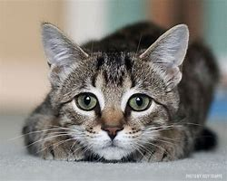
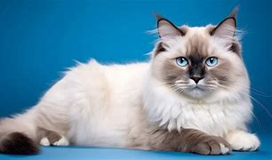
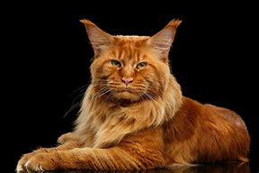

I Really Love Cats
Why?
There are many reasons why these fur babies are held so close to my heart. Growing up, I always had cats in my life. My family has had probabaly had a near dozen felines in the household. Each with unique personalities, coats, and memories, I will share some of my Favorite fur-iends of my childhood as well as some of my Favorite breeds.
Favorite Breeds
Top 3 Cat Breeds I like
- American Short Hair Tabby 
- Ragdoll 
- Maine Coone 
Tabbies have an extra special place in my heart as my most precious Sally girl was a tabby. We shared over 16 years of bestie-ship together since I was 5 years old. She brought me much comfort as a child in a troubled home, and would even lick my tears when I cried. At 24, I got a tattoo in her memory. She was the best.
I have never owned one, but Ragdoll cats have always captivated me. I think they are so adorable and regal and have the prettiest eyes!
Another breed I have not had the pleasure of owning, but would love to. Maine Coone cats are a large, super fluffy, breed. Owning one would be like having a dog and cat in one!
Names and Breeds of My Favorite Childhood Cats:
Sally - tabby cat
- Dakota - calico
- Smokey - fluffy grey cat
- Onyx - black cat
- Snoops - grey and white cat